Questão 1 · HIVAids · Medicina de Família e Comunidade · 4000141702O aspecto mais difícil no processo de atenção e cuidado contínuo às pessoas que vivem com HIV/aids é
A a supressão da carga viral do HIV.
B iniciar tratamento específico antirretroviral.
C adesão ao acompanhamento e à terapia antirretroviral.
D vinculação e retenção a um serviço de saúde.
Questão 2 · Vacinas meningocócicas · Doença meningocócica · 4000141701Em estratégias vacinais contra
A A tornou-se o mais prevalente mundialmente, após as extensas campanhas de vacinação realizadas no continente africano.
B B foi precocemente eliminado da maior parte dos países ocidentais, uma vez que foi o primeiro para o qual uma vacina eficaz foi desenvolvida.
C Y e sua maior gravidade nas meningites no primeiro ano de vida são a principal razão para sua inclusão recente no calendário vacinal infantil brasileiro.
D C suplantou o B e tornou-se o predominante no Brasil, nas últimas duas décadas, fato que tem guiado as políticas públicas de vacinação.
Questão 3 · Classif icação das Epilepsias · Tratamento Cirúrgico · Neurologia · 4000141700A epilepsia
A do lobo frontal é a mais frequente na população geral adulta.
B benigna da infância tem alta prevalência e é uma das principais causas de epilepsia na idade adulta.
C do lobo temporal é importante causa de esclerose hipocampal, tem alta prevalência na idade adulta e possui tratamentos clínico e cirúrgico para controle das crises.
D do lobo temporal tem relação com convulsão febril na infância e tem baixa prevalência na idade adulta.do lobo frontal é a mais frequente na população geral adulta.
Questão 4 · Abstinência de Álcool · Psiquiatria · 4000141699Homem de 28 anos interrompeu o uso de álcool há 2 dias, ocasião em que passou a apresentar tremores, sudorese, discurso incoerente, ilusões e alucinações visuais (zoopsias). Segundo familiares, nos últimos dias o paciente estava mais isolado, com diminuição do apetite e do sono. Foi prescrita reposição hidroeletrolítica e 10 mg VO de diazepam. Observou- se atenuação dos sinais de hiperatividade autonômica por 2 horas, quando os sintomas retornaram e o paciente apresentou- se mais inquieto, aparentando estar assustado. Com base nessa descrição, o paciente deve
A permanecer internado, pois se trata de quadro que necessita de assistência hospitalar por trazer riscos ao indivíduo (
B ser liberado para tratamento no CAPS AD (Centro de Atenção Psicossocial Álcool e outras Drogas), sendo recomendado associar o uso de antidepressivo desde o início visando aumentar a adesão ao tratamento e atenuar a sintomatologia depressiva.
C ser liberado após orientação quanto à necessidade de hidratação e uso correto dos medicamentos prescritos (benzodiazepínico e reposição de tiamina), pois os dados indicam abstinência, e ele pode ser tratado no CAPS AD.
D permanecer internado, e, em caso de agitação psicomotora é recomendado o uso endovenoso de neurolépticos de baixa potência.
Questão 6 · Sigilo prof issional · 4000141697Conforme disposto no Código de Ética Médica, é vedado ao médico revelar fato de que tenha conhecimento em virtude do exercício de sua profissão, salvo, entre outros motivos
A quando do exame médico de trabalhadores.
B se tiver consentimento, por escrito, do paciente.
C quando de seu depoimento como testemunha.
D se o paciente tiver falecido.
Questão 8 · Declaração de óbito DO Atestado de óbito · 4000141695A obrigação legal da emissão da Declaração de Óbito, em casos de “morte não natural” (decorrente de causas externas) compete ao médico
A que vinha prestando assistência ao paciente, sempre que o tempo entre o evento violento e a morte for superior a 30 dias.
B legista ou de SVO (Serviço de Verificação de Óbito), nas localidades que dispõem desses tipos de serviço.
C legista, qualquer que tenha sido o tempo entre o evento violento e a morte propriamente.
D do serviço público de saúde mais próximo do local onde ocorreu o evento, nas localidades que não dispõem de Instituto Médico Legal.
Questão 9 · Políticas de Saúde do Sistema Único de Saúde · Medicina Preventiva · Política Nacional de Humanização · 4000141694Entre as diretrizes gerais para a implementação da Política Nacional de Humanização nos serviços de Urgência e Emergência, está:
A definir protocolos clínicos, garantindo a eliminação de intervenções desnecessárias e respeitando as diferenças e as necessidades do sujeito.
B acolher a demanda independentemente de critérios de risco, garantindo o livre acesso aos demais níveis de assistência.
C ampliar a resolução das urgências e emergências, bloqueando o acesso às estruturas hospitalares.
D evitar a alta precoce e os riscos decorrentes dos cuidados domiciliares.
Questão 10 · Saúde Suplementar · 4000141693No Brasil, o setor de saúde suplementar exibe diferentes modalidades de gestão e operação. A modalidade denominada “cooperativa de trabalho médico” tem a seguinte característica, entre outras:
A algumas cooperativas possuem hospitais próprios, onde os médicos são cooperados e a clientela é composta por pessoas físicas e jurídicas.
B gestão feita por organização formada por profissionais cooperados ou entidades de trabalhadores em geral.
C uniformidade do padrão dos serviços prestados, dos preços cobrados e dos instrumentos de gestão, em todo o país.
D serviços prestados em unidades próprias ou por meio de empresa de medicina de grupo que emprega os profissionais médicos.
Questão 11 · Lei n 81421990 · 4000141692Nos termos da Lei no 8.142, de 28/12/1990, os Conselhos de Saúde devem ter
A atuação na formulação de estratégias da política de saúde, excluídos os aspectos econômicos e financeiros.
B caráter permanente e consultivo.
C composição paritária entre representantes do governo e profissionais de saúde.
D decisões homologadas pelo chefe do poder legalmente constituído em cada esfera do governo.
Questão 12 · Tuberculose · Controle dos comunicantes · Pediatria · 4000141691RN foi vacinado com BCG ao nascer. Sua mãe foi diagnosticada com tuberculose pulmonar bacilífera logo após o parto. A conduta para o RN, seguindo as orientações do Ministério da Saúde, é:
A isoniazida por três meses; em seguida, realizar prova tuberculínica; e, se < 5 mm, suspender isoniazida e revacinar com BCG.
B rifampicina suspensão por três meses; em seguida, realizar prova tuberculínica; e, se ≥ 5 mm, manter rifampicina por mais 3 meses.
C rifampicina suspensão por seis meses, não estando indicada a realização da prova tuberculínica.
D isoniazida por seis meses, não estando indicada a realização da prova tuberculínica.
Questão 13 · Asma ocupacional x asma relacionada ao trabalho · Classif icação de Schilling · 4000141690Asma brônquica ocupacional e asma brônquica relacionada ao trabalho são
A respectivamente, a asma que aparece pela primeira vez em paciente adulto sem antecedentes do agravo e a desencadeada por exposição a alérgeno do trabalho que acomete paciente que já teve asma no passado.
B denominações usadas para distinguir casos de asma decorrentes, respectivamente, de exposições a alérgenos de alto peso molecular e a irritantes de baixo peso molecular.
C formas de manifestação da asma brônquica reconhecida como acidente do trabalho na lista brasileira de doenças relacionadas ao trabalho, sendo seus diagnósticos apoiados, respectivamente, em testes de hiper-reatividade brônquica específica e inespecífica.
D respectivamente, a asma manifestada depois que o trabalhador saiu do local de trabalho e a asma manifestada ainda no local de trabalho.
Questão 14 · Política Nacional de Atenção Básica PNAB · 4000141689O objetivo de se trabalhar com a territorialização na Saúde Coletiva é
A realizar a avaliação do impacto epidemiológico dos serviços hospitalares gerais e especializados sobre os níveis de saúde da população.
B possibilitar a caracterização da homogeneidade do acometimento de agravos em cidades de médio e grande portes.
C caracterizar os problemas de saúde das populações identificados num território com a perspectiva de sua generalização para a cidade como um todo.
D prevenir riscos e evitar danos à saúde, a partir de um diagnóstico da situação de saúde e das condições de vida de populações em áreas delimitadas.
Questão 15 · Medicina Preventiva · Transição Epidemiológica no Brasil · 4000141688Analisando-se o perfil epidemiológico do Brasil, pode-se observar que, nas últimas três décadas, de 1990 a 2020, ocorreu
A aumento da mortalidade por câncer de mama e por câncer de colo de útero e controle da dengue.
B aumento da expectativa de vida ao nascer, diminuição da mortalidade infantil e controle da paralisia infantil.
C controle da tuberculose e da hanseníase e diminuição das mortes por causas pré-natais e perinatais.
D aumento da mortalidade infantil tardia e reintrodução da dengue como causa de epidemia.
Questão 16 · Program Saúde da Família PSF e Estratégia Saúde da Família ESF · 4000141687A Estratégia de Saúde da Família é considerada prioridade para o reordenamento do modelo assistencial à saúde e objetiva o estabelecimento de
A maior vínculo entre equipe de profissionais de saúde e indivíduo, família e comunidade com base territorial, considerando o espaço como construção social.
B medidas de controle de doenças agudas infecciosas por meio da visita domiciliar realizada exclusivamente por profissional médico, contribuindo para a redução de gastos hospitalares.
C ações de educação e promoção à saúde, voltadas a populações vulneráveis, com o objetivo de impor mudanças de estilo de vida a indivíduo, família e comunidade.
D maior vínculo entre médicos e indivíduos de comunidades com populações pobres, desassistidas por planos de saúde, em regiões remotas ou de periferias das cidades de pequeno e médio portes.
Questão 17 · Letalidade · 4000141686No dia 24 de maio de 2020, o Brasil registrou 363 211 casos confirmados de COVID-19, sendo: 149 911 casos recuperados, 190 634 casos em acompanhamento e 22 666 óbitos. O coeficiente de letalidade da doença nessa data foi de
A 73,4‰.
B 0,58‰.
C 5,24%.
D 6,24%.
Questão 18 · Medicina Preventiva · Epidemiologia · Causalidade · 4000141685Um estudo de coorte encontrou a associação entre o consumo frequente de carne bovina e o risco de câncer de boca e orofaringe. Foi encontrada, ainda, uma forte relação dose- -resposta com o aumento do consumo. Os critérios de causalidade propostos por Hill que estão representados no trecho acima são
A gradiente biológico e temporalidade.
B temporalidade e evidência experimental.
C especificidade e coerência.
D analogia e gradiente biológico.
Questão 19 · Falácia ecológica · 4000141684Em um estudo de conglomerados, atribuir ao indivíduo um resultado de dados agregados pode levar a um erro de interpretação chamado
A erro tipo II.
B erro de classificação.
C viés de seleção.
D falácia ecológica.
Questão 20 · Medicina Preventiva · Epidemiologia · Estudos Epidemiológicos · 4000141683O principal objetivo da randomização em ensaio clínico é
A ajudar a assegurar a representatividade da população geral nos grupos de tratamento.
B facilitar as medidas de variáveis.
C assegurar que os grupos de estudos sejam comparáveis nas características iniciais.
D reduzir o viés de informação na alocação do tratamento.
Questão 21 · Cardiopediatria e Cardiopatias congênitas · Principais cardiopatias congênitas · Pediatria · 4000141682A comunicação interatrial (CIA)
A tem indicação de correção cirúrgica somente quando há sintomatologia significativa.
B do tipo
C geralmente leva à cianose na idade pré-escolar, que regride espontaneamente, não necessitando cirurgia para sua correção.
D do tipo
Questão 22 · Classif icação da Isquemia Aguda dos Membros · Oclusão Arterial Aguda OAA · 4000141681Tromboembolismo Arterial Mulher de 68 anos apresenta dor intensa no membro inferior esquerdo (MIE) há 36 horas, com perda de motricidade, restrição ao leito, frialdade e mudança da cor do pé, conforme imagem: Fez uso de analgésicos e anti-inflamatórios sem melhora. AP: brilação atrial crônica sem tratamento. Exame físico: MIE com cianose xa, presença de ictenas, gradiente térmico em terço médio da perna, ausência de pulsos poplíteo e distais à esquerda e presença de todos os pulsos 4+/4 no membro inferior direito. O provável diagnóstico, a etiologia, a classificação clínica e o tratamento são, respectivamente:
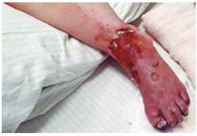
A oclusão arterial aguda; embólica; Rutherford IIB; amputação primária e antiagregação plaquetária.
B doença arterial obstrutiva periférica; trombótica; Rutherford IIB; tromboembolectomia à Fogarty e anticoagulação.
C doença arterial obstrutiva periférica; aterosclerótica; Rutherford I; angioplastia com stent e antiagregação plaquetária.
D oclusão arterial aguda; embólica; Rutherford III; amputação primária e anticoagulação.
Questão 23 · Abordagem cirúrgica do pé diabético · 4000141680Homem de 60 anos apresenta necrose indolor do hálux esquerdo após usar calçado apertado. AP: DM. Exame físico: necrose bem delimitada com área exsudativa puntiforme na face plantar da base do hálux, pele xerótica, com redução de sensibilidade tátil, pulsos femorais e poplíteos presentes e fortes, pulsos distais ausentes bilateralmente. Índice Tornozelo- Braquial à esquerda: 1,10 na artéria tibial anterior e 1,20 na artéria tibial posterior. Raio X do pé esquerdo: normal. O tipo de acometimento do pé diabético e o adequado tratamento, além de antibioticoterapia e curativos, são respectivamente:
A microvascular apenas; repouso.
B macrovascular apenas; amputação aberta do hálux.
C macro e microvascular; arteriografia, revascularização e amputação do hálux.
D macro e microvascular; arteriografia e amputação do hálux.
Questão 24 · Diagnóstico · Cirurgia · 4000141679Considere a radiografia a seguir: A principal conclusão diagnóstica da radiografia apresentada é:
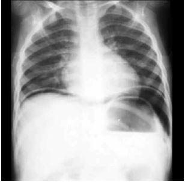
A presença de nível hidroaéreo sugestivo de obstrução intestinal.
B opacidade abdominal sugestiva de ascite.
C elevação diafragmática sugestiva de hérnia diafragmática de Morgagni.
D pneumoperitôneo sugestivo de perfuração de víscera oca.
Questão 25 · Diagnóstico · Pediatria · 4000141678Menino com 16 dias de vida apresenta di culdade para evacuar desde o nascimento, associada a distensão abdominal. AP: nascido a termo, eliminou mecônio com 3 dias de vida, após estímulo retal. Desde a alta da maternidade, evacuou duas vezes, após aplicação de supositório de glicerina. Exame físico: abdome globoso, distendido, RHA propulsivos, sem sinais de reação peritoneal. O método considerado como padrão-ouro para o diagnóstico da principal hipótese diagnóstica é
A manometria anorretal.
B enema opaco.
C biópsia retal de sucção.
D ressonância nuclear magnética.
Questão 26 · Intussuscepção ou Invaginação Intestinal · 4000141677Menino de 9 meses apresenta dor abdominal intermitente há 1 dia. Mãe relata que ele apresenta momentos com muita dor, que duram alguns minutos e, em seguida, ca quieto e pálido. Hoje apresentou 4 episódios de vômitos: os dois primeiros com conteúdo alimentar; e os 2 mais recentes esverdeados. Não evacua há 2 dias. Exame físico: REG, calmo, descorado +/4, desidratado +/4, FC 140 bpm. Abdome distendido, RHA diminuído, doloroso à palpação, com massa móvel palpável em hipocôndrio direito, e fossa ilíaca direita “vazia”. A principal hipótese diagnóstica é
A apendicite aguda.
B enterocolite necrosante.
C invaginação intestinal.
D obstrução intestinal por Ascaris
Questão 27 · Etiologia e Epidemiologia · Diagnóstico · Apresentação Clínica · 4000141676Mulher de 32 anos apresenta dor facial à direita e obstrução com eliminação de secreção nasal à direita há 15 dias. AP: extração do 2º molar superior à direita há 1 mês, cujo procedimento foi doloroso e traumático. Exame otorrinolaringológico: ausência de 2º molar superior à direita com mucosa friável ao toque e tecido de granulação; fossa nasal direita com saída de secreção amarelada pela concha nasal média e hiperemia de mucosa à direita ( figura 1); fossa nasal esquerda normal. Rinoscopia posterior: secreção amarelada em rinofaringe; raio X de seios paranasais: figura 2. Assinale a alternativa correta.
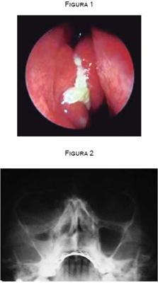
A O diagnóstico é sinusite aguda maxilar bacteriana, e o quadro atual não deve ter relação com a extração dentária.
B Não há relação entre os fatos, pois a drenagem do seio maxilar se dá pela concha nasal inferior e não pela concha média.
C O raio X de seios da face mostra velamento de ambos os seios maxilares, portanto o quadro atual não tem relação com o procedimento odontológico.
D Trata-se de um quadro de sinusite maxilar bacteriana de causa odontogênica.
Questão 28 · Glaucoma Agudo de Ângulo Fechado Crise Aguda de Glaucoma · 4000141675Mulher de 60 anos refere que estava assistindo à televisão quando se levantou e, sem acender as luzes, foi na penumbra buscar uma manta em seu quarto. Informa que, pouco tempo depois, começou a apresentar náuseas, forte cefaleia supraorbitária e dor ocular à direita de forte intensidade com visão turva e halos coloridos. Ao exame externo, você detecta semimidríase paralítica, córnea com diminuição de brilho, grande hiperemia conjuntival com injeção ciliar e olho direito com digito-pressão elevada. Sua hipótese diagnóstica e o tratamento inicial até a chegada do especialista, após afastar contraindicações sistêmicas, seriam:
A neurite óptica isquêmica; vasodilatadores e antiagregantes plaquetários.
B glaucoma agudo; manitol 20% intravenoso, inibidor da anidrase carbônica e colírio de pilocarpina 2%.
C uveíte hipertensiva; colírio de corticosteroide de hora em hora até sair da crise.
D esclerite posterior; pomada de corticosteroide mais curativo oclusivo para não entrar luz e repouso.
Questão 29 · Hemorragia Subaracnoidea HSA · Acidente Vascular Cerebral Hemorrágico · 4000141674Acidentes Vasculares Cerebrais AVC Mulher de 52 anos apresenta cefaleia de forte intensidade há 5 dias. É encaminhada ao Serviço de Referência com hipótese diagnóstica de hemorragia subaracnóidea (HSA). AP: hipertensa e tabagista. TC de crânio: normal. Líquor, conforme imagem: Pode-se afirmar que

A a ausência de sinais de sangramento na TC indica classificação de Fisher 1, porém a presença de sangue no líquor confirma HSA.
B a prova dos 3 tubos sugere acidente de punção durante a coleta, não se podendo ainda afastar a hipótese de HSA.
C a ausência de sinais de sangramento na TC (Fisher 1) e a prova dos 3 tubos positiva sugerem rotura de aneurisma da circulação posterior.
D a prova dos 3 tubos sugere HSA, cuja etiologia deve ser investigada com angiografia digital cerebral ou angiotomografia.
Questão 30 · Radiograf ia de tórax · 4000141673Considere a imagem: Assinale a alternativa que correlaciona corretamente os números às estruturas anatômicas correspondentes.
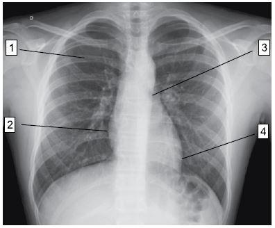
A 1 – porção posterior do arco costal; 2 – átrio direito; 3 – brônquio principal esquerdo; 4 – ventrículo esquerdo.
B 1 – porção anterior do arco costal; 2 – átrio direito; 3 – brônquio principal esquerdo; 4 – átrio esquerdo.
C 1 – porção posterior do arco costal; 2 – ventrículo direito; 3 – carina principal; 4 – átrio esquerdo.
D 1 – porção anterior do arco costal; 2 – ventrículo direito; 3 – carina principal; 4 – ventrículo esquerdo.
Questão 31 · Indicações · 4000141672Homem de 48 anos encontra-se no 5o dia de tratamento de pneumonia comunitária com cefalosporina de 2a geração, porém está mantendo febre e leucocitose. Raio X de tórax: velamento do 1/3 inferior do hemitórax direito, formando a parábola de Damoiseau. Realizada toracocentese diagnóstica. Exames do líquido pleural: aspecto amarelo opaco; pH 7,2; glicose 30 mg/dL; DHL 1 800 UI/L. A conduta mais adequada é a
A drenagem torácica.
B tomografia computadorizada de tórax.
C broncoscopia com lavado broncoalveolar.
D decorticação pulmonar.
Questão 32 · Escoliose · 4000141671Menina de 16 anos notou que possui uma perna mais comprida que a outra. Exame físico: assimetria do triângulo de Talhe, teste de Adams positivo e desnivelamento da bacia. O diagnóstico mais provável é
A fêmur curto congênito.
B tíbia vara de Blount.
C displasia do desenvolvimento do quadril.
D escoliose juvenil.
Questão 33 · Câncer de Bexiga · Cirurgia · 4000141670Homem de 70 anos queixa-se de sangramento intermitente na urina há quatro semanas, acompanhado por dor “em peso” no baixo ventre, sensação de plenitude vesical e urgência miccional. AP: HAS controlada, DM tipo 2, dislipidemia, obesidade e tabagismo (40 anos/maço), dois episódios prévios de hematúria com eliminação de cálculos. Assinale a alternativa correta a partir das informações.
A A hematúria, a urgência e a plenitude são decorrentes de provável litíase na junção ureterovesical.
B A tomografia computadorizada é o melhor exame para investigação, sendo suficiente para o diagnóstico.
C A principal hipótese é tumor urotelial, sendo necessários exame de imagem do trato urinário alto e cistoscopia.
D A uretrocistoscopia normal descarta tumor urotelial como causa da hematúria.
Questão 34 · Escroto Agudo · 4000141669Menino de 13 anos apresenta dor testicular à esquerda, de início noturno e de forma súbita há 4 horas. Refere que já teve esse quadro previamente, porém com melhora espontânea. Considerando o exposto, assinale a alternativa correta.
A Trata-se de orquido-epididimite, visto que a torção é mais comum em lactentes.
B Trata-se de varicocele, quadro comum em jovens, que ocorre principalmente à esquerda.
C O Doppler de bolsa deve ser obrigatoriamente realizado para diferenciação entre orquido-epididimite e torção testicular.
D A exploração cirúrgica escrotal pode ser indicada, uma vez que a principal hipótese é de torção testicular.
Questão 35 · Hérnias Inguinocrurais · Cirurgia · 4000141668Assinale a alternativa que apresenta a correspondência correta entre números e estruturas anatômicas. Ilustração esquemática da região inguinal direita, visão posterior
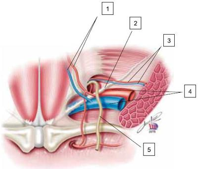
A 1 – vasos epigástricos superiores; 3 – vasos obturatórios; 5 – ducto deferente.
B 2 – ligamento inguinal; 4 – vasos ilíacos internos; 5 – ducto deferente.
C 1 – vasos epigástricos inferiores; 2 – ligamento inguinal; 3 – vasos espermáticos.
D 1 – vasos epigástricos inferiores; 2 – ligamento de Cooper; 4 – vasos ilíacos externos.
Questão 36 · Tratamento · Cirurgia · 4000141667Mulher de 23 anos, com dor abdominal inicialmente difusa que, após 6 horas, irradiou para FID, acompanhada de vômitos e inapetência. Exame físico: dor localizada em FID, com descompressão brusca positiva localizada no ponto de McBurney. Baseando-se na hipótese diagnóstica, o antibiótico deve ser iniciado
A no momento em que o cirurgião estiver incisando a pele.
B no momento da indicação cirúrgica.
C após confirmação do diagnóstico no intraoperatório.
D se houver secreção purulenta na cavidade abdominal.
Questão 37 · Tratamento do Adenocarcinoma Gástrico · Estadiamento · Epidemiologia · 4000141666Em relação ao câncer gástrico, é correto afirmar que
A sua incidência está aumentando em todo o mundo, apesar do tratamento do Helicobacter pylori.
B nos casos avançados, a ressecção combinada de órgãos adjacentes não deve ser realizada, mesmo quando possível a ressecção R0.
C os carcinomas precoces são aqueles que não infiltram além da submucosa, independentemente do estado linfonodal.
D o principal exame para o estadiamento é a PET-CT.
Questão 38 · Tratamento Clínico · Tratamento Cirúrgico · Manif estações Clínicas · 4000141665Homem de 26 anos refere dor em andar superior do abdome, acompanhada de náuseas e sensação de empachamento. Após três dias, apresenta piora da dor, com necessidade de mor na. Exame físico na admissão: BEG, abdome globoso, doloroso à palpação de epigástrio. Exames laboratoriais na admissão: Hb 14,2 g/dL; HT 40%; GB 19 000/mm3; plaquetas 224 000/ mm³; TGO 88 U/L; TGP 102 U/L; GGT 504 U/L; FA 199 U/L; BT 1,5 mg/dL, glicemia 150 mg/dL, DHL 250 U/L, amilase 2 600 U/L. TC de abdome no terceiro dia apresenta: De acordo com a principal hipótese diagnóstica, é correto afirmar que

A o antibiótico deveria ter sido introduzido na admissão.
B a TC de abdome deve ser realizada o mais precoce possível.
C a hipocalcemia é um critério de gravidade.
D a CPRE está indicada após estabilização clínica.
Questão 39 · Tratamento · Cirurgia · 4000141664Na diverticulite aguda, pacientes com classificação de Hinchey grau
A 1 apresentam abscesso pericólico localizado, podendo ser tratados ambulatorialmente com antibióticos e analgésicos.
B 2 necessitam de internação para realização de colonoscopia precoce para evitar complicações maiores.
C 3 dificilmente necessitam de procedimento cirúrgico, e a laparoscopia sempre está contraindicada.
D 4 necessitam de drenagem percutânea urgente, podendo ser guiada por ultrassonografia ou tomografia computadorizada.
Questão 40 · Manometria Esof ágica · Tratamento Cirúrgico da DRGE · 4000141663Homem de 42 anos refere ter doença do re uxo gastroesofágico há 10 anos. Realizou vários tratamentos com melhora e retorno dos sintomas após a suspensão. EDA realizada há 1 mês: esofagite erosiva leve (classificação grau A de Los Angeles e grau 1 de Savary-Miller). Paciente gostaria de ser submetido a tratamento cirúrgico na tentativa de evitar uso crônico de medicação. O exame a ser realizado para indicar e definir o tipo de cirurgia é
A pHmetria esofágica de 24 horas.
B impedanciometria esofágica.
C eletromanometria esofágica.
D repetição de EDA com biópsia da erosão.
Questão 41 · O f ígado anatomia e histologia · 4000141662O tecido com menor concentração de enzima creatinofosfoquinase total – CPK é o
A cardíaco.
B cerebral.
C muscular esquelético.
D hepático.
Questão 42 · Clínica e tipos histológicos · 4000141661Mulher de 45 anos, oriental, cozinheira, apresenta mácula hipercrômica assintomática no primeiro quirodáctilo direito, com crescimento progressivo há 2 anos, conforme imagem: O diagnóstico provável é
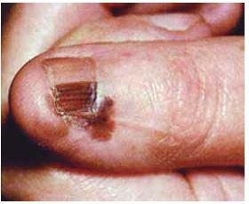
A hematoma com hemossiderose por traumatismo crônico profissional.
B onicomicose por fungos demáceos.
C pigmentação exógena por shitake.
D melanoma lentiginoso acral.
Questão 43 · Dor · 4000141660Homem de 25 anos apresenta queixas inespecí cas de dor generalizada há 1 ano. Essa dor é contínua, profunda e super cial, não se limitando a uma estrutura, sem fatores de melhora ou piora identi cados. Realizou extensa investigação diagnóstica sem nenhuma alteração. AP: fadiga e sono não reparador há anos. Em relação ao diagnóstico desse paciente, podemos afirmar que se trata de dor
A nociceptiva.
B neuropática.
C nociplástica.
D psicogênica.
Revisar: possível letra faltando em enunciado
Questão 44 · Princípios bioéticos f undamentais ou principialistas ou principialismo Beauchamp e Childress · 4000141659Os quatro princípios básicos da Bioética que norteiam a abordagem de situações graves e complexas, foram descritos por Tom Beauchamp e James Childress em 1979 e se mantêm vigentes até os dias de hoje. São eles:
A não maleficência, beneficência, liberdade e empatia.
B beneficência, justiça, dignidade e responsabilidade.
C não maleficência, beneficência, respeito à autonomia e justiça.
D dignidade, não maleficência, transparência e moralidade.
Questão 45 · Concentrado de plaquetas · 4000141658O hemocomponente e a situação que melhor indicaria seu uso são:
A concentrado de hemácias para paciente anêmico crônico, com Hb de 8 g/dL e FC de 66 bpm.
B concentrado de plaquetas para paciente sem sangramento que será submetido inadiavelmente à cirurgia cardíaca e apresenta plaquetometria de 70 000/mm³.
C crioprecipitado para paciente com sangramento intraoperatório, com plaquetometria de 30 000/mm³, tempo de protrombina com RNI de 3,5 e fribrinogênio de 180 g/dL.
D plasma fresco congelado para paciente sem sangramento e com tempo de protrombina com RNI de 6.
Questão 46 · Neurologia · Anatomia Fisiologia e Semiologia Neurológica · 4000141657Síndrome do Neurônio Motor Superior e Inf erior Na síndrome de primeiro neurônio ou do neurônio motor superior, as manifestações são:
A hipotonia, fraqueza muscular, hiporreflexia, fasciculações.
B ausência de reflexo cutâneo abdominal, fraqueza muscular, reflexo cutâneo plantar em flexão e hipertonia.
C reflexo cutâneo plantar em flexão, normorreflexia, normotonia e leve fraqueza muscular.
D hipertonia, fraqueza muscular, hiperreflexia e presença de sinal de Babinski.
Questão 47 · Desviar o potássio para dentro das células · Gluconato de cálcio · Remover o potássio do organismo · 4000141656Homem de 32 anos, vítima de politrauma há 3 dias com múltiplas escoriações em membros inferiores, TCE grave com hipertensão intracraniana e trauma esplênico grau II Paciente manteve-se estável hemodinamicamente sem necessidade de droga vasoativa, sem complicações infecciosas, em suporte ventilatório com FiO2 50% e relação pO2/FiO2 300; peso 80 kg. Exames laboratoriais: Cr na admissão 0,9 mg/dL. Atuais: Cr 2,6 mg/dL, Ur 82 mg/dL, K 7,0 mEq/L, fósforo 6,0 mg/dL, DHL 2015 UI/L, pH 7,18, Bicarbonato 10 mEq/L, pCO2 24 mmHg, Na 133 mEq/L, Cl 105 mEq/L, albumina 3,9 g/dL. Mantém débito urinário de 0,2 mL/kg/hora nas últimas 24 horas. O ECG apresenta: A conduta é administrar
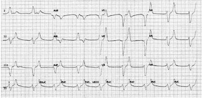
A cálcio intravenoso; solução glicoinsulínica; solução de bicarbonato; furosemida, independentemente do estado volêmico do paciente, e resinas de troca.
B cálcio intravenoso; solução glicoinsulínica; solução de bicarbonato; furosemida, se estado volêmico permitir, e avaliar a indicação de suporte renal agudo.
C solução glicoinsulínica; furosemida, independentemente do estado volêmico do paciente, e avaliar a indicação de suporte renal agudo.
D cálcio intravenoso; solução glicoinsulínica e reposição de bicarbonato, e sempre indicar suporte renal agudo.
Questão 48 · Espirometria · Distúrbio ventilatório obstrutivo · 4000141655Mulher de 18 anos apresenta dispneia esporádica aos esforços, associada a tosse seca e sibilos, principalmente pela manhã, há 3 meses. Refere sintomas de rinite, atualmente controlados. Exame físico: BEG, acianótica, PA 110 x 80 mmHg, FC 80 bpm, FR 15 irpm, oximetria de pulso em ar ambiente 97%. Pico de uxo expiratório 230 L/min (60% do predito). Espirometria apresenta-se a seguir: É correto afirmar que

A se trata de distúrbio pulmonar ventilatório obstrutivo moderado com resposta ao broncodilatador.
B se trata de distúrbio pulmonar ventilatório restritivo leve com resposta ao broncodilatador.
C o exame não preenche critérios técnicos para análise; curvas não aceitáveis.
D se trata de distúrbio pulmonar ventilatório restritivo moderado sem resposta ao broncodilatador.
Questão 49 · Heparina · 4000141654Homem de 25 anos apresentou embolia pulmonar aguda depois de 24 horas da apendicectomia. A conduta recomendada em relação à anticoagulação é
A suspender em, no máximo, 1 mês, desde que não apresente TVP associada e por ser paciente jovem.
B suspender assim que receber alta hospitalar e retomar as atividades laborais.
C prolongar por mais de 6 meses, pois se trata de paciente jovem com possibilidade alta de recorrência.
D manter por três meses.
Questão 50 · Apresentação clínica · 4000141653Homem de 69 anos, pescador, apresenta nódulo eritomato- -perláceo com telangectasias na região zigomática com crescimento progressivo há 3 anos, conforme imagem: O diagnóstico provável é
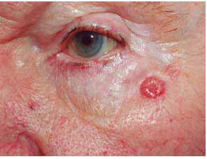
A leishmaniose tegumentar americana.
B carcinoma basocelular nodular.
C linfoma cutâneo.
D esporotricose.
Questão 51 · Saúde do Idoso geriatria · Exame f ísico e Avaliação Funcional do Idoso · Síndrome da Fragilidade · 4000141652Mulher de 83 anos apresenta sensação de cansaço, fraqueza e fadiga, com perda de peso não intencional de 6 kg em 6 meses (peso anterior era de 60 kg); não consegue andar uma quadra. AP: tem escolaridade universitária e utiliza 8 medicações ao dia. Exame físico: IMC 17,9 kg/m2; caminha com passos curtos e gastou 40 segundos para percorrer 4,6 metros; escala de Katz com 4 dependências para atividades básicas de vida diária; miniexame do estado mental com 27 pontos; escala de depressão geriátrica com 9 pontos; inabilidade de levantar-se 5 vezes da cadeira sem ajuda dos braços. Essa paciente tem diagnóstico de síndrome da fragilidade, pois apresenta
A sensação de fadiga, perda de peso não intencional, velocidade de marcha diminuída e não anda uma quadra.
B miniexame do estado mental com 27 pontos, sensação de fadiga, velocidade de marcha diminuída e utiliza mais que 5 medicações ao dia.
C inabilidade de levantar-se da cadeira sem ajuda dos braços, IMC de 17,9 kg/m², escala de depressão geriátrica com 9 pontos e utiliza mais que 5 medicações ao dia.
D sensação de fadiga, escala de Katz com 4 dependências, miniexame do estado mental com mais de 20 pontos e não consegue andar uma quadra.
Questão 52 · Indicações Relativas NãoObrigatórias · Tratamento · 4000141651Mulher de 45 anos apresenta dor epigástrica em queimação associada a sensação de plenitude pós-prandial, há aproximadamente 1 ano. Refere que alguns alimentos costumam causar mais sintomas, como frituras, refrigerantes e molhos industrializados. EDA: pangastrite enantemática leve e gastrite erosiva antral intensa associada a bulboduodenite erosiva leve com teste da urease positivo. O tratamento de escolha é
A amoxicilina 1 g, claritromicina 500 mg e IBP em dose plena, todos de 12/12 h, por 7 dias.
B amoxicilina 1 g, claritromicina 500 mg e IBP em dose plena, todos de 12/12 h, por 14 dias.
C levofloxacina 500 mg 1 x ao dia, claritromicina 500 mg e IBP em dose plena de 12/12 h por 7 dias.
D levofloxacina 500 mg 1 x ao dia, claritromicina 500 mg e IBP em dose plena de 12/12 h por 14 dias.
Questão 53 · Diagnóstico · 4000141650Homem de 48 anos refere falta de ar aos esforços e edema de membros inferiores há 2 anos, de caráter progressivo. Há 3 meses, apresenta edema facial pela manhã que melhora durante o dia. AP: tabagista 80 anos/maço, HAS e DM tipo II há 6 anos. Exame físico: PA 160 x 100 mmHg, FC 104 bpm, ictus no sexto espaço intercostal dois cm para fora da linha hemiclavicular esquerda, estase jugular +/4, crepitações nas até terço médio dos pulmões, edema de membros inferiores até raiz da coxa. Saturação de oxigênio de 90%. O diagnóstico mais provável é
A insuficiência cardíaca com fração de ejeção preservada.
B insuficiência cardíaca com fração de ejeção reduzida.
C DPOC com cor pulmonale.
D síndrome nefrótica de etiologia diabética.
Questão 54 · Manejo inicial e pacotes · 4000141649Entre as medidas que devem ser realizadas, na primeira hora do atendimento do paciente com sepsis, estão: a realização de ressuscitação volêmica com
A 30 ml/kg de cristaloide e a prescrição de noradrenalina para manter PAM maior ou igual a 65 mmHg.
B 30 ml/kg de coloide e a prescrição de noradrenalina para manter PAM maior ou igual a 65 mmHg, e de dobutamina, se a saturação venosa central for menor que 70%.
C 30 ml/kg de ringer lactato e a prescrição de noradrenalina e de vasopressina para manter PAM maior ou igual a 75 mmHg e de hidrocortisona 200 mg em infusão contínua por 24 horas.
D cristaloide até a pressão venosa central ficar maior que 12 mmHg e a prescrição de noradrenalina para manter PAM maior ou igual a 75 mmHg.
Questão 55 · quick SOFA · 4000141648Homem de 57 anos apresenta febre de 38 ºC, tosse e expectoração amarelada há 3 dias. Exame físico: FC 110 bpm, PA 80 x 50 mmHg, FR 31 mpm e oximetria de pulso 87%. Consciente e orientado, MV presente com crepitações nas na base de hemitórax esquerdo. O valor de quick SOFA desse paciente é
A dois.
B um.
C quatro.
D três.
Questão 56 · Intoxicação por Paracetamol Acetaminof eno · Medidas gerais · 4000141647O uso do carvão ativado está indicado na intoxicação por
A chumbo.
B monóxido de carbono.
C paracetamol.
D ácido muriático.
Questão 57 · Tratamento do hiponatremia crônica sintomática · 4000141646Mulher de 60 anos, assintomática, está em uso de losartana 100 mg à noite, anlodipino 10 mg e hidroclorotiazida 25 mg pela manhã. As doses das medicações foram aumentadas há 2 meses. AP: HAS, AVC há 5 anos, com drenagem de hematoma. Exame físico: euvolêmica. Exame laboratorial de sódio: atual 125 mEq/L e anteriores 128 a 130 mEq/L, desde a cirurgia. A principal causa da hiponatremia e as condutas são:
A secreção inapropriada do hormônio antidiurético (SIHAD) associada ao uso de tiazídico; dosar, no soro, ureia e ácido úrico, e, na urina, osmolaridade e sódio; retirar hidroclorotiazida e propor restrição hídrica.
B uso de hidroclorotiazida; dosar, no soro, ureia e creatinina, e, na urina, sódio; hidratar com soro fisiológico e suspender a hidroclorotiazida.
C efeito colateral da losartana; dosar, no soro, ureia, creatinina e potássio, e, na urina, sódio e potássio; suspender losartana.
D SIHAD; dosar, no soro, ureia e ácido úrico, e, na urina, osmolaridade e sódio; solução hipertônica endovenosa para elevar sódio a 130 mEq/L; trocar hidroclorotiazida e losartana por outros anti-hipertensivos.
Questão 58 · Apresentação Clínica e Avaliação Inicial · Endocrinologia · 4000141645Mulher de 38 anos apresenta nódulo no lobo esquerdo da tireoide, há 3 meses. Exames laboratoriais: TSH 0,007 mUI/L (VR 0,4 – 4,0), T4L 1,6 ng/dL (VR 0,8 – 1,8). Exame ultrassonográ co: nódulo único de 1,8 cm de diâmetro, regular, sólido isoecogênico, com fluxo central e periférico ao Doppler. A conduta é
A tratar com iodo radiativo.
B solicitar cintilografia da tireoide.
C realizar punção aspirativa por agulha fina.
D introduzir metimazol.
Revisar: possível letra faltando em enunciado
Questão 59 · Hipoglicemia em indivíduos não diabéticos · Endocrinologia · 4000141644Mulher de 28 anos em investigação de hipoglicemia. Nega medicação de uso crônico. AF: mãe portadora de DM em uso de medicação oral e insulina. Considere os exames laboratoriais: Diante desses resultados, a hipótese diagnóstica é hipoglicemia
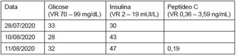
A reacional reativa.
B por insulinoma.
C pelo uso de insulina.
D pelo uso de sulfonilureias.
Questão 60 · Estenose aórtica · 4000141643Paciente portador de estenose aórtica, confirmada com ecocardiograma. Os três sintomas que indicam gravidade da doença são:
A dor torácica, dispneia e síncope.
B dispneia, escarro hemoptoico e tosse produtiva.
C dor precordial aos esforços, síncope e palpitações.
D síncope, edema de membros inferiores e escarro hemoptoico.
Questão 61 · Diagnóstico da Depressão · Tratamento da Depressão · Psiquiatria · 4000141642Mulher de 42 anos apresenta, há 2 meses, dores pelo corpo, desânimo, irritabilidade, insônia com sono não reparador, diminuição do apetite e emagrecimento de 5 kg, com piora há 15 dias. Não tem conseguido fazer as tarefas domésticas, nem outras atividades de que antes gostava, passando a maior parte do dia com os sintomas, com discreta melhora da disposição física no período da tarde. Não consegue relacionar sua situação a nenhum fator ambiental, mas relata maior indisposição para o trabalho, o que tem gerado alguma dificuldade com os colegas. AP: episódio semelhante há 10 anos. O diagnóstico e a conduta medicamentosa são:
A transtorno depressivo maior; inibidor preferencial de recaptura de serotonina.
B transtorno do sintoma somático; benzodiazepínicos.
C transtorno bipolar; estabilizador de humor.
D transtorno depressivo persistente (distimia); antidepressivo tricíclico.
Questão 62 · Endometriose · 4000141641Mulher de 27 anos, em consulta na Unidade Básica de Saúde, apresenta dismenorreia incapacitante e progressiva desde a menarca. Relata que nos últimos 5 anos passou a apresentar limitações em sua vida diária devido ao quadro de dor pélvica, necessitando com frequência procurar ambiente hospitalar para administração de medicação endovenosa. AP: G0P0. Exame físico: IMC 29 kg/m2. Toque vaginal: colo broelástico, indolor à mobilização, útero intrapélvico, mobilidade preservada, pouco doloroso à palpação bimanual, anexos não palpáveis, sem massas ou coleções palpáveis em sua topografia, ausência de nodulações e espessamentos em fundo de saco posterior. US transvaginal: normal. A conduta é
A solicitar exames especializados (US transvaginal com preparo intestinal ou RNM abdome) e manter seguimento em serviço primário.
B prescrever tratamento clínico com anti-inflamatórios e contraceptivos orais e manter seguimento em serviço primário.
C prescrever tratamento clínico com analgésicos potentes (opioides) e imunomoduladores e encaminhar para serviço especializado.
D indicar laparoscopia exploradora e encaminhar para serviço especializado.
Questão 63 · Câncer de Endométrio · 4000141640Mulher de 72 anos apresenta sangramento vaginal há 6 meses. AP: G2P2A0C0, DUM aos 49 anos. AF: irmã falecida de neoplasia ovariana aos 68 anos. Exame físico: IMC 27 kg/m2. Exame ginecológico: colo atró co, ausência de sangramento ativo com presença de discreto sangramento residual em fundo vaginal, útero intrapélvico, mobilidade preservada, palpada massa cística de difícil delimitação em fundo de saco lateral esquerdo. US transvaginal: útero com volume de 86 cm3; espessura endometrial 7 mm; massa cística anecoica com maior diâmetro de 6 cm, sem septos ou vegetações e sem uxo ao Doppler em ovário esquerdo; ovário direito de aspecto atró co. TC abdome e pelve: extensa linfadenopatia pélvica bilateral e em cadeia paraórtica próximo à bifurcação das ilíacas. O diagnóstico provável é câncer de
A endométrio do tipo II.
B ovário do tipo I produtor de estrogênio.
C ovário do tipo II produtor de estrogênio.
D endométrio do tipo I.
Revisar: possível letra faltando em enunciado
Questão 64 · Ortotanásia · Conceitos relacionados à morte · 4000141639SAMU foi acionado pelo marido de mulher de 58 anos que apresenta insuficiência respiratória aguda. AP: tratamento para neoplasia ovariana há 6 meses, atualmente em quimioterapia paliativa; marido relata clareza da paciente sobre o seu prognóstico e que não desejava ser submetida a medidas como intubação orotraqueal e ventilação mecânica. Exame físico: extremamente desconfortável e confusa. FR: 38 irpm com uso de musculatura acessória, saturação de O2 em ar ambiente de 70%, PA 160 x 100 mmHg; MV abolido em hemitórax direito e reduzido em 1/3 inferior de hemitórax esquerdo. Marido manifesta desejo de honrar a vontade da esposa. Assinale a alternativa que apresenta a conduta imediata.
A Acionar o comitê de bioética local.
B Sedação para intubação orotraqueal e solicitar leito de UTI, pois não fazê-lo implicaria em omissão de socorro.
C Sedação para intubação orotraqueal e solicitar leito de UTI, pois o relato da família não possui validade legal, uma vez que a paciente não registrou sua diretiva antecipada de vontade em cartório.
D Iniciar titulação de morfina até controle dos sintomas.
Questão 65 · Tratamento cirúrgico · 4000141638Mulher de 62 anos foi submetida a histerectomia total + salpingooforectomia bilateral por via laparoscópica. Histopatológico da peça cirúrgica: carcinoma endometrial tipo endometrioide, grau de diferenciação nuclear 1, estádio FIGO IA. A conduta é:
A reabordagem cirúrgica para realização de linfadenectomias pélvica e paraórtica.
B complementação do tratamento cirúrgico com radioterapia e braquiterapia.
C complementação do tratamento cirúrgico com quimioterapia.
D seguimento oncológico com observância clínica.
Questão 66 · Vulvovaginites · Cervicites · 4000141637Mulher de 21 anos queixa-se de dispareunia. Exame ginecológico: colo com intensa hiperemia e edema, JEC-3, recoberta por secreção amarelada espessa, teste de aminas negativo e pH vaginal 4,4. Exame microscópico do conteúdo vaginal a seguir: A hipótese diagnóstica e o melhor tratamento são, respectivamente:
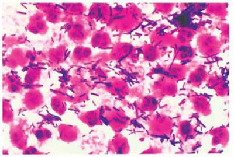
A vaginite aeróbia; clindamicina creme vaginal a 2% por 14 dias.
B cervicite; azitromicina 1 g (VO) e ceftriaxone 500 mg (IM) em doses únicas.
C vaginose bacteriana; metronidazol 500 mg (VO) de 12/12 h por 7 dias.
D candidíase vulvovaginal; fluconazol 150 mg (VO) em dose única.
Questão 67 · Anatomia do Assoalho Pélvico · 4000141636O diafragma pélvico feminino é formado pelos músculos
A levantador do ânus (iliococcígeo, pubococcígeo e puborretal) e coccígeo.
B levantador do ânus (coccígeo, iliococcígeo e puborretal) e obturador interno.
C puborretal e obturador interno.
D coccígeo e obturador interno.
Questão 68 · Tratamento · Ginecologia · Miomatose uterina · 4000141635Mulher de 48 anos apresenta aumento do volume menstrual e cólicas intensas que não melhoram com uso de analgésicos. AP: menstruações regulares a cada 30 dias com duração de 6 dias, G3P3C3, laqueadura prévia, HAS, obesidade e tabagismo. Exame ginecológico: útero aumentado de volume, superfície lobulada. Ultrassom transvaginal: útero com volume 200 cm³, várias imagens nodulares de até 20 mm sugestivas de miomas de localização intramural e subserosa, endométrio regular de 7 mm, ovários sem alterações. A conduta inicial é indicar
A miomectomia laparoscópica.
B anticoncepcionais combinados.
C anti-inflamatórios não hormonais no período menstrual.
D análogo de GnRH.
Questão 69 · Dor mamária mastalgia · 4000141634Paciente de 35 anos queixa-se de mastalgia de intensidade moderada, quase todos os meses, antes das menstruações. AP: G0P0. AF: mãe recentemente diagnosticada com câncer de mama aos 61 anos. Exame das mamas: desconforto à palpação dos quadrantes superolaterais bilateralmente. A conduta é
A evitar suporte mamário (sutiã, top).
B prescrever anti-inflamatórios não esteroidais tópicos ou orais.
C iniciar rastreamento anual com mamografia e ressonância magnética das mamas.
D prescrever óleo de prímula e vitamina D, medidas comprovadamente eficazes.
Questão 70 · Ginecologia · Puericultura · Flora vaginal na criança · 4000141633Menina de 4 anos e 5 meses apresenta sangramento vaginal há 4 dias e odor diferente nas calcinhas. A principal hipótese é
A dermatite por candidíase.
B sarcoma botrioide.
C corpo estranho.
D condilomatose.
Questão 71 · Roteiro diagnóstico · 4000141632Mulher de 45 anos, em consulta ginecológica, queixa-se de ausência de menstruação há quatro meses. Nega episódio anterior de amenorreia e queixas climatéricas. AP: G4P3A1C3, laqueadura tubárea. A conduta é
A expectante, sem indicação de avaliação hormonal.
B dosar FSH, LH e estradiol basal.
C realizar a biópsia de endométrio e beta-hcg.
D dosar FSH, LH, estradiol basal, TSH e progesterona em fase lútea.
Questão 72 · Climatério · 4000141631Mulher de 51 anos queixa-se de fogachos principalmente à noite, acompanhados de suor e insônia. Relata canseira e indisposição. AP: G2P2C2, DUM em 2018, HAS e hipotireoidismo controlados. AF: pai falecido por AVC aos 65 anos e avó materna por câncer de mama aos 75 anos. Exame físico: PA 125 x 80 mmHg, IMC 31 kg/m². Exame ginecológico: hipotrofismo vaginal. Mamografia recente: BI-RADS 2. Considerando o caso, assinale a alternativa correta.
A Terapia hormonal (TH) pode ser indicada, sendo a via transdérmica a primeira escolha.
B Pelos antecedentes pessoais e familiares, estrogênio via vaginal é a melhor indicação.
C Pelas contraindicações à TH, melhor indicar o uso de antidepressivos no alívio dos fogachos.
D Pela contraindicação do uso do estrogênio no hipotireoidismo, indica-se progesterona isolada.
Questão 73 · Conduta · Obstetrícia · 4000141630Feto restrito com 30 semanas de gestação, morfologicamente normal, apresenta dopplervelocimetria com diástole ausente nas artérias umbilicais. A conduta é
A resolução por cesárea após corticoterapia e sulfato de magnésio.
B acompanhamento pelo ducto venoso.
C avaliação diária com cardiotocografia convencional até 34 semanas.
D resolução imediata por cesárea.
Questão 74 · Avaliação do risco gestacional · Obstetrícia · 4000141629Tercípara, portadora de HAS sob controle, em uso de inibidor de receptor de angiotensina (IECA) e hidroclorotiazida (HCTZ), em consulta de rotina com clínico geral, refere que pretende engravidar e quer orientação sobre os medicamentos que está usando, a qual deve ser:
A substituir o IECA por alfametildopa e manter a HCTZ.
B manter os medicamentos em uso, pois a PA está sob controle.
C substituir o IECA por bloqueador de receptor de angiotensina.
D substituir os medicamentos em uso por levomepromazina.
Questão 75 · Atendimento · 4000141628Mulher de 18 anos refere ter sofrido violência sexual com penetração vaginal há cinco dias por um desconhecido. Não realizou boletim de ocorrência (BO) e só procurou atendimento médico hoje. Não sabe informar sobre a situação vacinal. Refere menstruação há 10 dias e não faz uso de anticoncepcional. Além da solicitação das sorologias (sí lis, HIV e hepatite B), a conduta imediata é administrar
A contracepção de emergência, profilaxia contra ISTs não virais, primeira dose da vacina para hepatite B, profilaxia para HIV e sugestão de realização do BO.
B profilaxia contra ISTs não virais, imunoglobulina anti- -hepatite B, notificação compulsória e orientação sobre a possibilidade de gravidez.
C primeira dose da vacina para hepatite B, profilaxia para HIV, realização de notificação compulsória, orientação sobre a possibilidade de gravidez e da realização do BO.
D contracepção de emergência, profilaxia contra ISTs não virais, imunoglobulina anti-hepatite B e realização de notificação compulsória.
Questão 76 · Sangramento segunda metade da gestação · Intercorrências obstétricas obstetrícia patológica · 4000141627Descolamento prematuro de placenta DPP Secundigesta de 22 anos, com 36 semanas e 2 dias, procura a maternidade com desconforto abdominal e um pequeno sangramento vaginal há 1 hora. Exame físico: BEG, eupneica, hidratada, FC 110 bpm, PA 150 x 100 mmHg, tônus uterino aumentado, BCF 170 bpm. Presença de discreta quantidade de sangue coletado em fundo de saco vaginal, colo grosso e impérvio. O diagnóstico e a conduta são, respectivamente:
A rotura de seio marginal; ultrassom e observação de sangramento.
B trabalho de parto prematuro; inibição do trabalho de parto.
C placenta prévia; ultrassom e observação de sangramento.
D descolamento prematuro de placenta; cesárea de emergência.
Questão 77 · Diabetes na gestação DMG · Diagnóstico · Obstetrícia · 4000141626Secundigesta de 37 anos apresenta atraso menstrual de 7 semanas e teste de gravidez positivo. AP: prematuridade e pré- eclâmpsia na gestação anterior. AF: HAS e DM. Exame físico: IMC 31,2 kg/m². A idade gestacional pelo ultrassom é compatível com a DUM. Exames bioquímicos: primeira glicemia de jejum 116 mg/dL, segunda glicemia de jejum 108 mg/dL, hemoglobina glicada 6,8%. A hipótese diagnóstica e a conduta são, respectivamente:
A DM pré-gestacional; iniciar tratamento.
B DM gestacional; iniciar tratamento.
C gestante de alto risco; realizar GTT 75 g imediatamente.
D gestante de baixo risco; realizar GTT 75 g entre 24 e 28 semanas.
Questão 78 · Imunizaçao na gestação · 4000141625Primigesta de 21 anos, com 12 semanas de gestação, comparece assintomática na primeira consulta de pré-natal. Antes da gravidez, recebeu duas doses de vacina contendo o componente tetânico. A orientação quanto à vacina antitetânica é
A informar que não há necessidade de vacinar durante a gestação.
B indicar uma dose de tríplice bacteriana acelular do tipo adulto (difteria, tétano e coqueluche – dTpa) imediatamente.
C indicar uma dose de dTpa a partir da 20ª semana de gestação.
D indicar uma dose de dupla adulto (difteria e tétano) imediatamente e uma dose de dTpa a partir da 20a semana de gestação.
Questão 79 · Doenças associadas à gestação · Doenças inf ecciosas na gestação HIV síf ilis hepatites herpes · 4000141624Sif ilis na gestação Gestante de 29 anos, G3P1A1, com 13 semanas de gestação, retorna à consulta de pré-natal com seu parceiro sexual. Os resultados da sorologia para sífilis estão apresentados a seguir: Em relação ao parceiro, a interpretação do resultado e a conduta são, respectivamente:
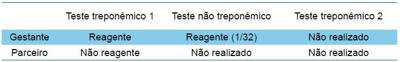
A não é um caso de sífilis; não tratar o parceiro e repetir a sorologia para sífilis em 15 dias.
B diagnóstico presumido de sífilis; tratá-lo com penicilina benzatina, por via intramuscular, em dose única totalizando 2 400 000 UI.
C sífílis latente recente; tratá-lo com penicilina benzatina, por via intramuscular, em duas doses com intervalo semanal, totalizando 4 800 000 UI.
D sífilis latente tardia; tratá-lo com penicilina benzatina, por via intramuscular, em três doses com intervalo semanal, totalizando 7 200 000 UI.
Questão 80 · Rotura prematura de membranas ovulares RPM · Intercorrências obstétricas obstetrícia patológica · 4000141623Obstetrícia Gestante de 29 anos, G2P1A0C0, com 31 semanas e pré- -natal sem intercorrências, é avaliada no pronto atendimento de maternidade de alto risco. Apresenta, há quatro horas, perda de líquido claro vaginal e, há uma hora, dor em cólica de moderada intensidade em hipogástrio. Exame físico: BEG, sinais vitais normais. A altura uterina de 29 cm, feto cefálico, BCF 140 bpm, dinâmica uterina de 3 contrações em 10 minutos, com 50 segundos de duração, rítmicas, dolorosas. Exame ginecológico: vulva umedecida, líquido amniótico escoando pela rima vulvar e acumulado em fundo de saco vaginal. Exame de toque: colo esvaecido 50%, medianizado, 5 cm de dilatação, com saída de líquido claro sem grumos, cefálico, plano 0 de De Lee. Assinale a alternativa que apresenta a conduta correta.
A Indometacina, betametasona e antibioticoterapia para tratamento de corioamnionite subclínica.
B Nifedipina, dexametasona e antibiótico para profilaxia de infecção neonatal por estreptococo do grupo B.
C Sulfato de magnésio, betametasona e antibiótico para profilaxia de infecção neonatal por estreptococo do grupo B.
D Terbutalina, sulfato de magnésio, dexametasona e antibioticoterapia para tratamento de corioamnionite subclínica.
Questão 81 · Etiologia · 4000141622Os principais agentes causadores de meningites em neonatos são:
A Haemophylus influenzae, Streptococcus pneumoniae e Neisseria meningitidis.
B Listeria spp, Streptococcus agalactiae e Haemophylus influenza.
C Streptococcus agalactiae, Haemophylus Influenzae e Streptococcus pneumonia.
D Escherichia coli, Listeria spp e Streptococcus agalactieae.
Questão 82 · Avaliação do Crescimento · Pediatria · Puericultura · 4000141621Menina de 3 meses não consegue rmar a cabeça e é muito irritada. AP: mãe não teve intercorrências durante a gestação. Na imagem, apresenta-se a curva de perímetro cefálico: A hipótese diagnóstica é
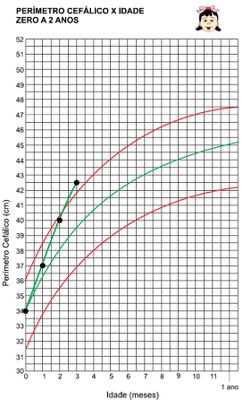
A síndrome de Crouzon.
B craniossinostose.
C porencefalia.
D hidrocefalia.
Questão 83 · Perda Neurossensorial · 4000141620Criança de quatro anos é desatenta na escola, está demorando para falar frases mais elaboradas, mantendo muitas trocas fonêmicas. Mãe e professora têm dúvida quanto à acuidade auditiva da criança. Nega antecedentes otológicos importantes como secreção ou dor. Audiograma apresenta: Trata-se de
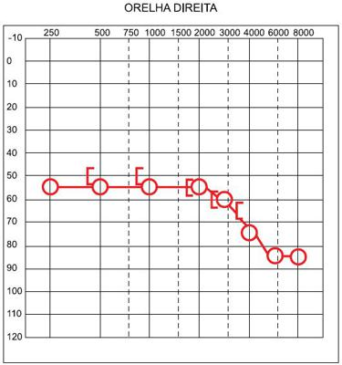
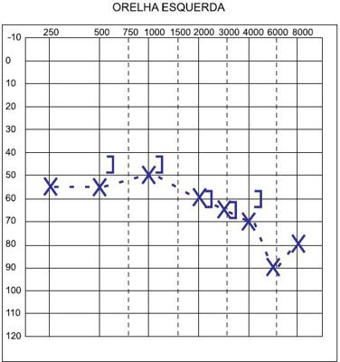
A otite média serosa, e o exame de otoscopia estará provavelmente alterado.
B surdez neurossensorial bilateral, e a investigação diagnóstica deve incluir avaliação genética, exames sorológicos e de imagem.
C surdez do tipo neurossensorial, e a causa mais comum é a hipertrofia das adenoides culminando em obstrução da tuba auditiva.
D surdez do tipo condutiva, quadro reversível com o tratamento de desobstrução das tubas auditivas.
Questão 84 · Abrasões Corneanas · 4000141619Criança de 6 anos foi acompanhar o pai no serviço de instalação de cerca na fazenda. Refere que bateu algo no olho esquerdo e sentiu correr uma “água quente”. Exame ocular: não realizado devido ao blefaro-espasmo à esquerda. Até o especialista chegar, a conduta é:
A jejum, colírio, pomada de antibiótico, curativo compressivo e estudo da profilaxia antitetânica.
B jejum, colírio de antibiótico de hora em hora sem necessidade de curativo e avaliação da profilaxia antitetânica.
C dieta livre, pois provavelmente se trata de abrasão corneana superficial.
D jejum, curativo oclusivo, repouso e avaliação da profilaxia antitetânica.
Questão 85 · Pediatria · Cetoacidose diabética · Endocrinologia pediátrica · 4000141618Na cetoacidose diabética em crianças,
A a principal causa de óbito é o choque.
B o tratamento baseia-se em reposição fluídica, insulinoterapia e correção dos distúrbios eletrolíticos.
C na primeira hora de atendimento, deve receber cristaloide, insulina subcutânea e bicarbonato de sódio (se menor que 15 mEq/L).
D a normalização da glicemia é a meta principal do tratamento da primeira hora.
Questão 86 · Mecanismo Fisiopatológico · 4000141617As características das diarreias inflamatória, osmótica e secretora são, respectivamente:
A pH fecal maior que 5,5; gordura nas fezes usualmente; pH fecal menor que 5,5.
B frequência evacuatória alta; geralmente cessa durante o jejum; pH fecal menor que 5,5.
C não cessa durante o jejum; pH fecal menor que 5,5; geralmente cessa durante o jejum.
D fezes pouco volumosas; odor ácido; fezes muito volumosas.
Questão 87 · Doença de Crohn · 4000141616Menina de 14 anos apresenta queixa principal de dor abdominal há 4 meses associada a apetite diminuído, perda de 5 kg e ocasionais evacuações amolecidas e sem sangue. Na inspeção anal, são observados dois grandes plicomas. Exames laboratoriais: pesquisa de sangue oculto nas fezes positivo, hemoglobina de 8,8 g/dL e albumina de 3,2 g/dL. A principal hipótese diagnóstica é
A infestação crônica por giárdia.
B doença de Crohn.
C doença celíaca.
D síndrome do intestino irritável.
Questão 88 · Pediatria · Artrite Séptica · 4000141615Menino de 8 anos apresenta marcha claudicante e febre há 5 dias. Exame físico: toxemia, palidez, com edema, hiperemia, dor e limitação ao movimento do joelho direito. Exames laboratoriais: hemograma anemia, leucocitose com desvio à esquerda, proteína C reativa elevada. O diagnóstico mais provável é
A artrite séptica.
B artrite reativa.
C febre reumática.
D artrite idiopática juvenil.
Questão 89 · Dor do Crescimento · 4000141614Assinale a alternativa que apresenta a melhor opção terapêutica para menina de 4 anos com dor em membros noturna benigna (dor de crescimento).
A Analgésicos e anti-inflamatórios.
B Calor local, massagem e analgésicos.
C Calor local, massagem e anti-inflamatórios.
D Massagem, analgésicos e anti-inflamatórios.
Questão 90 · Doença por lesões mínimas · 4000141613Menino de 3 anos apresenta edema em face há 2 semanas, que progrediu para pernas e barriga há 7 dias, e diminuição da diurese há 2 dias. Exame físico: FC 110 bpm, FR 20 irpm, PA 87 x 50 mmHg. BEG, hidratado, corado, edemaciado: palpebral +2/+4, membros inferiores +3/+4, escrotal e na região sacral, presença de ascite. As alterações laboratoriais urinárias e sanguíneas, respectivamente, que sugerem o diagnóstico da doença são:
A hematúria; diminuição do C3 e elevação do ASLO.
B proteinúria; hipoalbuminemia e diminuição do C3.
C proteinúria e hematúria; hipoalbuminemia.
D proteinúria e hematúria; elevação do ASLO e da creatinina.
Questão 91 · Inf ecção de Trato Urinário ITU · Pediatria · Diagnóstico laboratorial · 4000141612Menina de 2 meses apresenta febre (39,5 ºC) há 5 dias, irritabilidade e diminuição das mamadas há 2 dias e está em uso de cefalexina há 1 dia. Exame físico: T 38 ºC, REG. Exames laboratoriais: urina por sondagem vesical pH 6,0, densidade 1013, nitrito positivo, leucoesterase +3, 106 leucócitos/campo; cultura de urina negativa. Para o diagnóstico de infecção urinária, o exame de imagem a ser solicitado é
A ultrassonografia renal.
B cintilografia renal estática com DMSA.
C cintilografia renal dinâmica com DTPA.
D uretrocistografia miccional.
Questão 92 · Pediatria · Tipos de insuf iciência cadíaca na pediatria · Quadro clínicio · 4000141611Lactente masculino com 3 meses de idade apresenta cansaço e interrupções às mamadas, cianose perioral quando chora muito e ganho pondero-estatural insu ciente. AP: sopro cardíaco desde o nascimento. Exame físico: REG, FR 71 irpm, FC 159 bpm, mucosas descoradas (2+/4+), acianótico, pulsos com amplitude aumentada, tempo de enchimento capilar de 3 segundos, tiragens intercostal e subdiafragmática, crepitações pulmonares bilaterais, sopro sistólico e diastólico (2+/6+) na borda esternal esquerda superior com irradiação para o dorso, fígado palpável a 4 centímetros do RCD e o baço palpável a 2 centímetros do RCE. Esse lactente encontra-se em insuficiência cardíaca com padrão hemodinâmico
A quente (sem sinais de baixo débito) e seco (sem sinais de congestão venosa).
B quente (sem sinais de baixo débito) e úmido (com sinais de congestão venosa).
C frio (com sinais de baixo débito) e seco (sem sinais de congestão venosa).
D frio (com sinais de baixo débito) e úmido (com sinais de congestão venosa).
Revisar: possível letra faltando em enunciado
Questão 93 · Anemia f erropriva na inf ância · Pediatria · Diagnóstico · 4000141610Lactente de 11 meses apresenta palidez. No investigatório alimentar, observa-se apenas consumo eventual de frutas, legumes, verduras e carne, pois a criança prefere mamadeira de leite de vaca e mingau com bolacha. AP: aleitamento exclusivo até os 4 meses de vida e após introdução de leite de vaca. Exame físico: BEG, descorado +2/+4, presença de sopro sistólico discreto a ausculta cardíaca, sem visceromegalias. Exame laboratorial: hemograma: Hb 7,5 g/dL, Ht 24%, VCM 62, HCM 19,5, RDW 25%, leucócitos 8 900/mm3 (neutró los – 21%, linfócitos – 61%, eosinó los – 2,6%, monócitos – 15%), plaquetas 460 000/mm3. A classificação morfológica das hemácias e a provável etiologia da anemia são, respectivamente:
A normocítica e normocrômica; anemia hemolítica autoimune.
B macrocítica e normocrômica; anemia megaloblástica.
C microcítica e hipocrômica; anemia ferropriva.
D microcítica e hipocrômica; anemia de doença crônica.
Questão 94 · Agentes etiológicos · Pediatria · PneumoniasBroncopneumonias BCP na Inf ância · 4000141609Com relação à pneumonia na infância, assinale a alternativa correta.
A A implantação da imunização contra o pneumococo não alterou o cenário etiológico das pneumonias, de acordo com sua abrangência populacional.
B O uso de antibióticos protege a flora da orofaringe, dificultando a aquisição de infecção comunitária.
C Entre os principais mecanismos de defesa do aparelho respiratório, estão o reflexo de tosse e a função mucociliar, que adere e elimina agentes infecciosos.
D O agente
Questão 95 · Pediatria · Vacina BCG · 4000141608Com relação à vacina BCG, assinale a alternativa correta.
A As complicações mais comuns são abscesso, úlcera e linfonodos fistulizados.
B Exerce proteção contra as manifestações iniciais da tuberculose.
C A revacinação é indicada após a segunda dose sem evidência de cicatriz vacinal.
D Para melhor cicatrização da lesão vacinal, devem-se orientar pomadas cicatrizantes.
Questão 96 · Amamentação Aleitamento Materno · Obstetrícia · 4000141607Em relação ao aleitamento materno, assinale a alternativa correta.
A As infecções maternas por retrovírus como o HTLV1 e HTLV2 são contraindicações relativas para a amamentação, devendo-se analisar a carga viral materna.
B O Ministério da Saúde não contraindica a amamentação em mães infectadas pelo vírus da hepatite C, porque, apesar de teoricamente possível, a transmissão pelo leite materno não foi documentada.
C A mãe que usa medicamento contínuo deverá amamentar a criança logo após a sua ingestão, de forma a haver um período de tempo de, pelo menos, meia hora até a próxima mamada.
D No recém-nascido cardiopata, a amamentação está contraindicada devido à possibilidade de aumento do trabalho cardíaco.
Questão 97 · Pediatria · Puericultura · Puericultura Geral · 4000141606Após o nascimento, entre os sinais de alerta para a necessidade de procurar um profissional de saúde, está:
A fralda seca por mais de 12 horas.
B presença de cólicas, antes dos primeiros 30 dias de vida.
C oscilação no padrão das fezes, em relação a consistência, cor e frequência.
D choro muito frequente nas primeiras semanas de vida.
Questão 98 · Diagnóstico · Distúrbios respiratórios do período neonatal · Pediatria · 4000141605Após parto cesáreo, RN de 35 semanas de idade gestacional necessita de ventilação com pressão positiva na sala de parto. Com 30 minutos de vida, apresenta FR 80 irpm, tiragem intercostal e batimento de aletas nasais. O padrão radiológico esperado, a etiopatogenia e o tratamento para estabilização do paciente são, respectivamente:
A hiperinsuflação pulmonar e derrame intercisural; retardo da absorção do líquido pulmonar; CPAP nasal.
B infiltrado retículo-granular difuso e broncogramas aéreos; deficiência e inativação do surfactante pulmonar; administração de surfactante.
C condensação pulmonar grosseira, atelectasia e hiperinsuflação; aspiração de mecônio; CPAP nasal.
D hiperinsuflação pulmonar e infiltrado retículo-granular grosseiro; extravazamento de ar (pneumotórax); oxigênio inalatório.
Questão 99 · Massagem cardíaca · Reanimação neonatal · Pediatria · 4000141604Em relação à massagem cardíaca na reanimação em sala de parto, é correto afirmar que
A deve ser rapidamente realizada independentemente da adequação da ventilação pulmonar.
B a técnica dos 2 dedos é mais recomendada por ser mais fácil, menos cansativa e mais efetiva.
C deve ser intercalada com ventilação por cânula traqueal utilizando oxigênio a 100%.
D a sincronização da massagem com a ventilação deve possibilitar 30 ventilações e 120 compressões por minuto.
Questão 100 · Sangramento segunda metade da gestação · Descolamento prematuro de placenta DPP · Obstetrícia · 4000141603Gestante com 35 semanas apresentou sangramento vaginal, sendo indicada cesárea de urgência. O líquido amniótico era sanguinolento, e o bebê chorou ao nascer. O tempo indicado para o clampeamento do cordão é Respostas: 1 12 23 34 45 56 67 78 89 100
A de até 30 segundos.
B de 30 a 60 segundos.
C de 1 a 3 minutos.
D imediato.